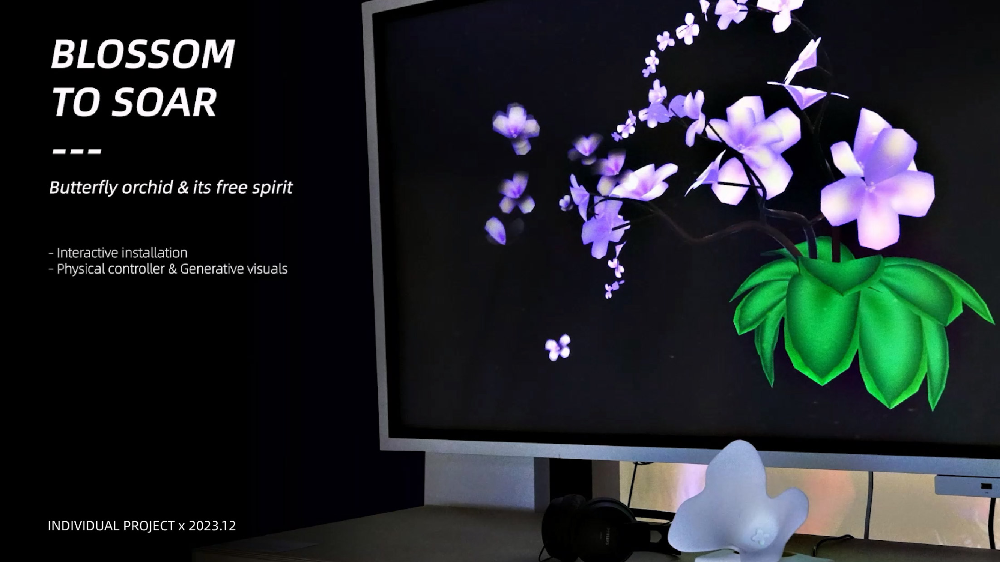
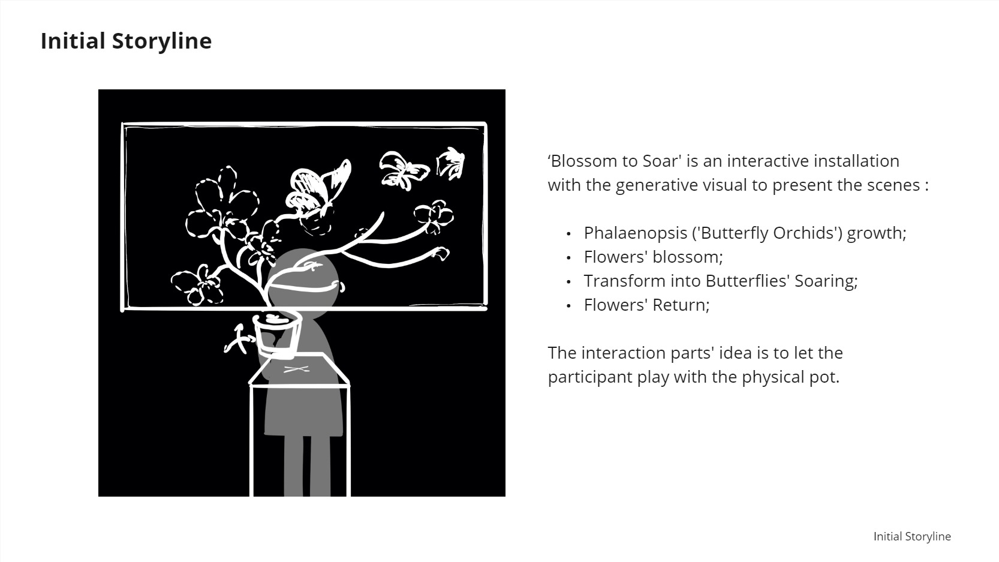
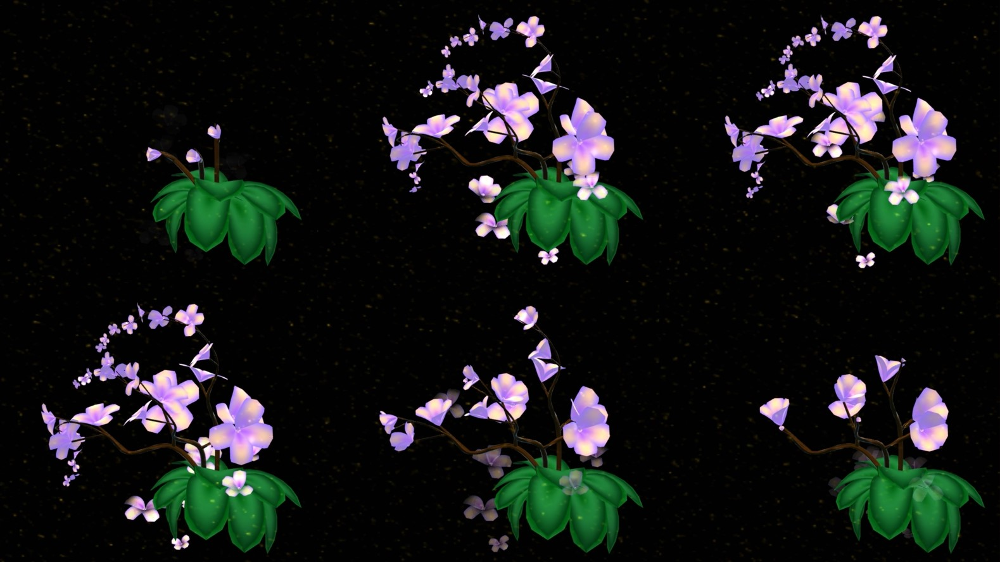
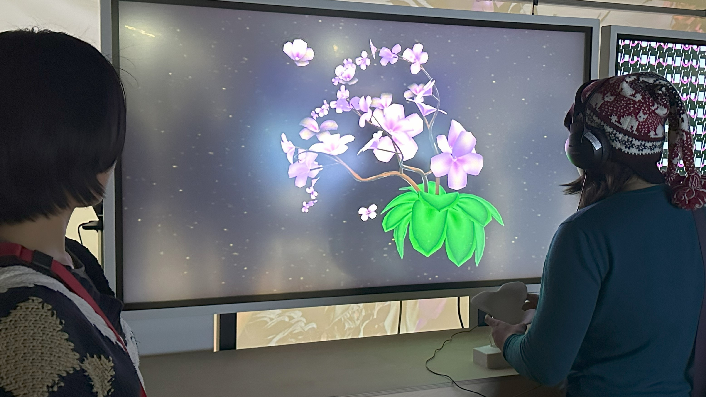
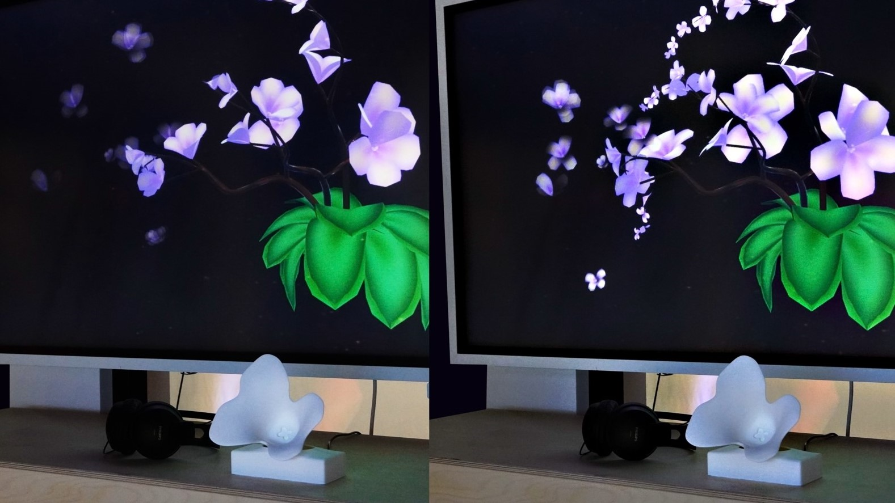

A butterfly orchid is named after a butterfly, but only for how it looks — it has never been given the butterfly's freedom of movement. Blossom to Soar turns that gap into an installation: lift the pot, tilt it, and the orchid you grew becomes butterflies and leaves. The visitor is not watching a flower; they are the one holding it.
00Executive Summary
What this project is, and why it works‘Blossom to Soar’ is a solo interactive installation with generative visuals, exploring the contrast between freedom and bondage, and the creativity of nature. The visitor picks up a physical pot and tilts it; a digital butterfly orchid grows out of the gesture and is then released into the posture of flying butterflies — a dance between the digital and the natural, performed by the person holding the pot.
- The metaphor is carried by the mechanics, not by a label. The piece is about a thing that looks free but is held in place. The visitor's own hand is what holds it, and their own tilt is what frees it — so the argument is made by participation rather than explained to them.
- The interface is a physical object, which is why it reads as natural. There is no cursor, no menu and no instruction screen — only a pot that responds to being picked up and turned. The interaction model was chosen because it lets the participant play with the pot, the way one would handle a real plant.
- The visuals are generated, not animated. Growth, blossom, transformation and return are produced in real time, which is what allows the response to the visitor's gesture to feel continuous rather than triggered.
- The transformation runs both ways. The orchid becomes butterflies, and the butterflies return to the orchid — returning is designed in as a closing scene, so the piece ends on contemplation of the balance between individual freedom and societal rules rather than on an escape.
| Format | Interactive installation — physical controller with real-time generative visuals |
| Scope | Concept & storyline · physical computing · controller build · generative visual design · interaction design |
| Year | 2023.12 |
| Team | Individual project |
| Central idea | The butterfly orchid is named for a butterfly but never given its freedom — freedom and bondage, and breaking through limitations |
| Deliverables | Initial storyline · physical pot controller · generative visual system · working installation · documentation video |
01Concept
Discipline: conceptual framingPhalaenopsis — commonly known as the butterfly orchid — takes its name from two Greek words: ‘Phalaina’ (moth or butterfly) and ‘opsis’ (similar). The name therefore means ‘the plant that resembles a butterfly’. It has been cultivated by people as an ornamental plant prized for its beauty and colour, and given glorious meanings — while the original butterfly orchids growing in their natural environment were barely noticeable to us.
That association with the butterfly, in other words, stays at the level of outward appearance; it never grants the plant a butterfly's freedom of spirit. The project takes this as its parallel to the limitations and restrictions that exist in human society, and uses the transformation and return between orchid and butterfly — completed by the participant's own involvement — to open a contemplation of the freedom and bondage of life, and to carry a message about breaking through limitations.
The visitor is placed inside the metaphor rather than shown it. Because the orchid is held in a pot by their own hand, the moment of release has to come from their own movement — which is why the closing scene is a return and not a disappearance. Freedom that simply leaves is not the point; the point is the balance between being held and being free.
02Interaction & Technical Design
Discipline: physical computing & generative visualThe installation is a closed loop between a physical object and a generative visual system. The storyline moves through four scenes, and the participant's handling of the pot is what drives every transition between them.
Growth
The phalaenopsis grows from the pot in response to the participant picking it up — the plant begins because the person arrived.
Blossom
Continuing to handle the pot brings the flowers into bloom, so the reward for engagement is growth rather than a score or a sound.
Soaring
Tilting the pot transforms the orchid into butterflies and releases them — the moment the project's argument about freedom is physically performed.
Return
The butterflies come back to the plant, closing the loop instead of ending on departure — and resetting the piece for the next visitor.
Physical controller
A pot-shaped object that is lifted and tilted. Reading the gesture directly — rather than mapping a mouse or a button onto it — is what keeps the interaction legible to a first-time visitor with no instructions.
Real-time generative visuals
The orchid, its flowering and the butterfly transformation are generated live, which is what lets the visuals respond continuously to how the pot is being held instead of cutting between fixed clips.
The subject is a plant being held in place. A screen-based interaction would have asked the visitor to operate the orchid; handing them the pot asks them to hold it. That single substitution is what makes the installation's theme legible without a caption — and it is the reason the piece works as an installation rather than as a video.
03Initial Storyline
From sketch to built piece

04The Installation
In use, and in the space
